통신선로기능사 (2004-02-01 기출문제)
1과목: 전기전자개론
1. 아래 회로도에서의 저항 R2에 흐르는 전류의 세기 I2는 몇 [A]인가?
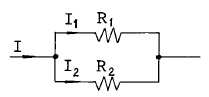
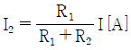
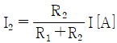
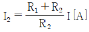
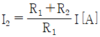
(정답률: 알수없음)

2. 그림의 회로망에서 R1 = R2 = RL인 경우 입력과 출력의 전류비(I1 : I2)는 얼마인가?
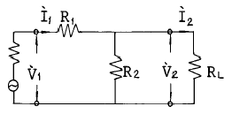
- 2 : 1
- 3 : 1
- 4 : 1
- 6 : 1
(정답률: 알수없음)
3. 파형률, 파고율이 동일하게 1인 파형은?
- 사인파
- 구형파
- 삼각파
- 고조파
(정답률: 70%)
4. C = 250[㎊]일때, f=710[㎑]에 대한 용량성 리액턴스 Xc는 얼마인가?
- 897[Ω]
- 450[Ω]
- 1790[Ω]
- 9000[Ω]
(정답률: 알수없음)
5. 코일 N회를 감은 원형 코일에 I[A]의 전류를 흘릴 경우 반지름 r[m]인 코일 중심에 작용하는 자장의 세기는?
- NIr
- NI/2r
- NI/r
- 2NI/r
(정답률: 알수없음)
6. 부궤환 증폭기의 특성으로서 잘못된 것은?
- 증폭도가 개선된다.
- 잡음이 적어진다.
- 주파수 특성이 좋아진다.
- 찌그러짐이 개선된다.
(정답률: 알수없음)
7. 궤환증폭회로의 전압증폭도 Af는 어느 것인가? (단, A는 궤환이 없을때의 전압증폭도, β 는 궤환계수)
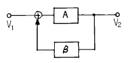
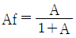
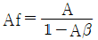
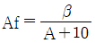
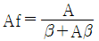
(정답률: 46%)
8.
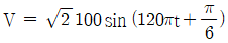
인 파형의 주기는 몇[sec] 인가?- 약 0.0167[sec]
- 약 0.167[sec]
- 약 0.067[sec]
- 약 0.67[sec]
(정답률: 알수없음)
9. 다음 회로의 입·출력식은?
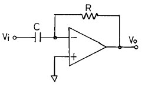
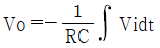
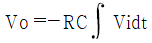
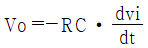
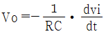
(정답률: 알수없음)
10. 그림과 같은 발진회로의 발진조건은?
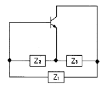
- Z1 = 용량성, Z2 = 용량성, Z3 = 용량성
- Z1 = 용량성, Z2 = 용량성, Z3 = 유도성
- Z1 = 유도성, Z2 = 용량성, Z3 = 용량성
- Z1 = 유도성, Z2 = 유도성, Z3 = 유도성
(정답률: 37%)
11. 펄스 변조 방식에서 펄스 부호 변조에 해당되는 것은?
- PAM
- PCM
- PFM
- PWM
(정답률: 알수없음)
12. 다음중 P형 반도체를 만들고자 할 때 바르게 연결된 것은?
- Si + As
- Si + Ga
- Si + P
- Si + Ge
(정답률: 알수없음)
13. 다음 자석의 자기현상 설명 중 옳지 않은 것은?
- 공기, 종이, 나무, 플라스틱은 비자성체이다.
- 철, 니켈, 코발트는 자성체이다.
- 자극은 자하가 집중하여 있는 양단의 단자를 말한다.
- 서로 같은 극끼리는 끌어당기고, 서로 다른 극끼리는 밀어낸다.
(정답률: 알수없음)
14. 발진기의 발진주파수 변동원인과 관계 적은 것은?
- 주위온도의 변화
- 부하의 변동
- 전원전압의 변동
- 안테나의 전계강도 변화
(정답률: 알수없음)
15. 진폭 변조에서 반송파 전력을 Pc, 변조도를 m이라 할 때 피변조파 전력 Pm을 나타내는 식은?
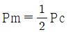
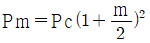
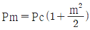
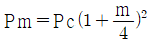
(정답률: 알수없음)
2과목: 전자계산기일반
16. 사용소자에 따라 컴퓨터의 세대를 구분한다면 집적회로를 채용한 세대는?
- 제 3세대
- 제 4세대
- 제 1세대
- 제 2세대
(정답률: 40%)
17. 다음은 프로그램을 작성하는 순서도이다. 빎안에 알맞은 것은?
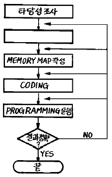
- 입출력 설계
- 프로그램 교정
- 프로그램 작성
- 결과분석
(정답률: 80%)
18. 자료의 전송이 직접 이루어지지 않는 장치는?
- 입력장치
- 기억장치
- 제어장치
- 연산장치
(정답률: 30%)
19. 원시 프로그램(SOURCE PROGRAM)이란?
- 로더(Loader)에 의해 실행 가능한 것
- 번역용 프로세서에 의해 생성된 것
- 사용자가 작성한 컴파일러 언어로 된 것
- 기계가 이해할 수 있는 기계어로 된 것
(정답률: 알수없음)
20. 2진법 10100101을 16진법으로 고치면?
- A4
- B4
- A5
- B5
(정답률: 55%)
21. 다음 중에서 NOT회로를 가장 잘 설명한 것은?
- 다수의 입력과 한개의 출력을 갖는다.
- 입력과 출력이 정반대가 된다.
- 입력과 출력 신호가 같다.
- NOR와 동일한 회로이다.
(정답률: 알수없음)
22. 컴퓨터 주변장치에 속하지 않는 것은?
- 카드리더
- 레지스터 뱅크
- 라인프린터
- 자기디스크 장치
(정답률: 알수없음)
23. 인간의 정신노동을 대신할 수 있는 전자계산기의 대표적인 기능은?
- 전달기능
- 기억기능
- 제어기능
- 연산기능
(정답률: 알수없음)
24. 다음 입·출력 장치중 하드 - 카피(hard - copy)라 불리우는 것은?
- 음극선관(CRT)
- 복사기
- 콘솔(console)
- 라인프린터(Line Printer)
(정답률: 알수없음)
25. A · (A · B + C)의 간략화는?
- A + B + C
- A · (B + C)
- B · (A + C)
- C · (A + B)
(정답률: 알수없음)
26. CATV에 사용되는 전송 케이블로 가장 적합한 것은?
- 일반시내 케이블
- Z형 스크린 케이블
- 반송 케이블
- 동축 케이블
(정답률: 100%)
27. 등화회로에 관한 설명 중 옳지 않은 것은?
- 선로 전송지연에 의한 일그러짐을 보상한다.
- 전송신호의 진폭감쇄에 의한 일그러짐을 보상한다.
- 수동방식과 자동방식이 있다.
- 전송잡음에 의하여 발생한 에러를 보상한다.
(정답률: 알수없음)
28. 2본의 심선도체를 평등하게 꼬아서 만든 케이블형은?
- DM형 퀘드케이블
- 성형 퀴드케이블
- 페어형 케이블
- 단심형 케이블
(정답률: 알수없음)
29. 전주에서 지선과 지주의 취부 방법 중 가장 옳은 것은?
- 지선은 장력측, 지주는 장력의 반대측에 취부한다.
- 지선과 지주 모두 장력의 반대측에 취부한다.
- 지선은 장력의 반대측, 지주는 장력측에 취부한다.
- 지선과 지주 모두 장력측에 취부한다.
(정답률: 55%)
30. 절연방법과 항장강도에 가장 특별히 고려를 하여야 하는 케이블은?
- 유티피(UTP) 케이블
- 폼스킨(FS) 케이블
- 해저 광케이블
- 옥내 PVC 케이블
(정답률: 알수없음)
3과목: 통신선로일반
31. 케이블에 장하(loading)를 시킨다는 것은 어떤 상태를 말하는가?
- 선로의 정전용량 C를 작게 하는 것이다.
- 선로의 저항 R을 작게 하는 것이다.
- 선로의 누설저항 G를 크게 하는 것이다.
- 선로의 인덕턴스 L을 크게 하는 것이다.
(정답률: 28%)
32. 고층건물내의 전화용 배관에 가장 적당한 것은?
- 경질 PVC관
- 콘크리이트관
- 흄관
- 석면시멘트관
(정답률: 알수없음)
33. 전자유도를 받는 PVC 차폐 케이블에서 그 유도전압이 2.3[V]이다. 이 케이블의 스트랜드선 양단을 접지한 바 2.25[V]가 되었다고 하면 차폐계수 K의 값은 약 얼마인가?
- 0.103
- 0.978
- 1.083
- 1.783
(정답률: 70%)
34. 전화 케이블의 전화회선에 대한 전력유도 잡음전압의 제한치는 얼마인가?
- 1[㎷] 이하
- 2[㎷] 이하
- 3[㎷] 이하
- 4[㎷] 이하
(정답률: 알수없음)
35. 시내전화케이블의 구조에 있어서 케이블심선의 점적율이 가장 높은 것은?
- 성형 쿼드케이블
- 쌍형 케이블(페어형케이블)
- DM형 쿼드케이블
- 페어형 복합 케이블
(정답률: 알수없음)
36. 통신선로를 특별히 분포정수회로로 취급하는 경우는?
- 선로 임피던스가 클 때
- 선로 길이가 짧을 때
- 주파수가 높을 때
- 감쇠량이 적을 때
(정답률: 알수없음)
37. PCM 반송방식에 주로 사용되는 시외전화 케이블은?
- 국내 케이블
- CCP 케이블
- 스크린 케이블
- PVC 케이블
(정답률: 알수없음)
38. 구내통신선로설비의 구성으로 볼 수 없는 것은?
- 공중회선 등 옥외회선을 구내로 인입하는 설비
- 사업자통신설비와 구내선을 분리 시험하기 위한 절분기능기기
- 국선 등 공중회선을 접속, 수용하기 위한 단자함 또는 주배선반
- 국선을 시험하기 위한 시험설비
(정답률: 80%)
39. 폼스킨 케이블의 심선접속시 충진된 젤리(Jelly)의 세척이 불량하면 어떠한 고장이 발생될 수 있는가?
- 강대외장에 의한 지기 고장
- 접속심선의 단선 고장
- 고주파를 전송할 때 누화 고장
- 회선 상호간의 혼촉 고장
(정답률: 알수없음)
40. 무게 0.7[㎏/m], 허용장력 350[㎏]인 광섬유 케이블을 마찰계수 0.5의 지하관로내에 직선으로 포설할 경우의 최장포설길이는?
- 최장 600m까지
- 최장 800m까지
- 최장 1000m까지
- 최장 1200m까지
(정답률: 알수없음)
41. 광섬유 통신의 특징이 아닌 것은?
- 전송손실이 극히 적다.
- 전력유도장애를 받는다.
- 주파수 대역폭이 크다.
- 장거리 전송이 가능하다.
(정답률: 알수없음)
42. 광섬유케이블의 전송 특성에서 분산의 종류에 해당하지 않는 것은?
- 모우드분산
- 스펙트럼분산
- 구조분산
- 재료분산
(정답률: 25%)
43. 다음은 열수축관의 어떤 작업을 설명한 것인가?
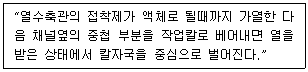
- 고장수리 방법
- 가열수축 방법
- 재접속 방법
- 해체 방법
(정답률: 알수없음)
44. 다음 중에서 공기주입기의 냉동회로에 사용되는 가스는?
- 탄산가스
- 프레온가스
- 프로판가스
- 메탄가스
(정답률: 알수없음)
45. 지하 케이블의 절연 접속을 하는 주된 목적은?
- 하중방지
- 누화방지
- 전식방지
- 오접방지
(정답률: 알수없음)
4과목: 선로설비기준
46. 전기통신에 관한 기본적이고 종합적인 정부의 시책은 누가 수립하는가?
- 대통령
- 국무총리
- 정보통신부장관
- 한국통신사장
(정답률: 알수없음)
47. 기간통신사업자가 정하는 이용약관은 일정 규정에 해당되어야 인가를 받을 수 있다. 다음 중 해당되지 않는 것은?
- 역무의 요금이 적정, 공평, 타당하여야 한다.
- 역무의 요금산정 방법이 적정하고 명확하여야 한다.
- 이용자의 이용형태를 부당하게 제한하지 아니 하여야 한다.
- 중요통신의 확보에 대한 배려를 하여서는 아니된다.
(정답률: 알수없음)
48. 음량손실의 객관적 척도인 종합음량정격에 포함되지 않는 것은?
- 송화음량정격
- 전송음량정격
- 수화음량정격
- 접속음량정격
(정답률: 알수없음)
49. 케이블용 옥외선로 전주의 간격은 얼마 정도로 하도록 권고하고 있는가?
- 30[m]이하
- 40[m]이하
- 50[m]이하
- 60[m]이하
(정답률: 알수없음)
50. 통신공사업자 이외의 자로서 허가를 받지 아니하고 행할 수 있는 경미한 공사는?
- 전기통신 지하관로의 설비공사
- 전기통신 시설물의 전력유도 방지 설비공사
- 인입국선이 2회선인 건축물의 구내선로설비공사
- 종합유선방송 전송로의 설비공사
(정답률: 알수없음)
51. 구내 건물 내부에 설치하는 통신용 케이블, 선조, 단자, 보호장치, 배관, 관로, 배선반 등과 그 부대설비를 무엇이라 하는가?
- 옥내선로설비
- 구내건물선로설비
- 구내통신선로설비
- 가입자통신설비
(정답률: 알수없음)
52. 전기통신설비의 보전과 보호를 위한 조치 중 틀린 것은?
- 자가전기통신설비의 소유자 또는 점유자에게 장애물 등의 이전, 개조, 수리를 요구할 수 있다.
- 전기통신에 장애를 줄 우려가 있는 식물의 제거를 요구할 수 있다.
- 전기통신설비의 장애를 줄 우려가 있는 장애물을 이용자가 임의로 변경할 수 있다.
- 기간통신사업자는 식물의 소유자가 식물의 제거에 응하지 않을 경우에 정보통신부장관의 허가를 받아 벌채할 수 있다.
(정답률: 알수없음)
53. 전기통신설비에서 평형도의 단위는?
- [㏈]
- [㎷]
- [㎃]
- [Ω]
(정답률: 알수없음)
54. 정보통신 공사업의 등록 기준에 속하지 않는 것은?
- 기술능력
- 자본금
- 공사용 기기
- 개인인 경우에는 자산평가액
(정답률: 알수없음)
55. 기간통신사업자로부터 전기통신회선 설비를 임차하여 전기통신역무를 제공하는 사업을 무엇이라 하는가?
- 부가통신사업
- 대여통신사업
- 임차통신사업
- 특정통신사업
(정답률: 알수없음)
56. 전기통신 기본계획을 수립할 때 미리 관계행정기관의 장과 협의해야 할 사항은?
- 전기통신 이용효율화에 관한 사항
- 전기통신의 기술 진흥에 관한 사항
- 전기통신 사업에 관한 사항
- 전기통신 질서유지에 관한 사항
(정답률: 60%)
57. 전기통신 선로의 유지 보수를 위하여 전화국 등에 갖추어야 할 선로도면에 표시하지 않아도 되는 것은?
- 맨홀 설치 간격
- 주간 거리 가공 선로의 명칭
- 선로 측정 방법
- 포설된 지하관 가닥수
(정답률: 알수없음)
58. 가공강전류전선의 저전압에서의 이격거리는?
- 10cm이상
- 20cm이상
- 30cm이상
- 60cm이상
(정답률: 알수없음)
59. 통신업무 수행을 위한 규정 중 순위가 1순위인 통화는?
- 전파관리
- 전기통신
- 기상
- 의료기관 업무
(정답률: 알수없음)
60. 동단자함에서 층단자함까지 또는 층단자함에서 다른 층의 층단자함까지(건물내 수직 구간)를 연결하는 통신케이블을 무엇이라 하는가?
- 급전선
- 건물간선케이블
- 수평배선케이블
- 구내간선케이블
(정답률: 알수없음)